| 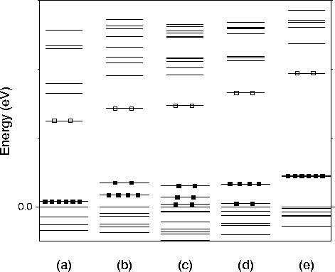 |
As each hydrogen atom is removed from the vacancy, an electron is removed from the highest occupied state. The resulting defects can act as acceptors that fill the t2 -level when ionised. This level is already filled in the case of so this defect is electrically neutral. However 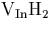, 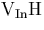 and 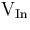 will behave as single, double and triple acceptors respectively.
The t2-level is split due to the lower symmetry of the partially
hydrogenated vacancies. has Td symmetry and
therefore the level does not split. has C3v
symmetry, so the t2 splits into an e- and a1- level. has C2v symmetry which leads to three separated
singlets.  and are directly
comparable with and , with the
dangling and hydrogen terminated bonds reversed, in addition to the
a - e level ordering. This t2-like state gradually moves
upwards away from the valence band as hydrogen atoms are removed. In
the t2-level is quite deep in the gap.
and are directly
comparable with and , with the
dangling and hydrogen terminated bonds reversed, in addition to the
a - e level ordering. This t2-like state gradually moves
upwards away from the valence band as hydrogen atoms are removed. In
the t2-level is quite deep in the gap.
The indium vacancy, , fits the trend of increasing acceptor character with decreasing number of hydrogen atoms present. Previous calculations [68] also show to be a triple acceptor.
The local vibrational modes for with pure and mixed isotope composition are shown in Table 4.3. The highest IR visible mode for at 2356.4 cm-1 is in excellent agreement with experiment (2315.6 cm-1, a 1.8% error), as is the 1690.8 cm-1 mode for 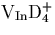 (experimental value of 1683.4 cm-1, an error of 0.4%). This small drop in error with deuteration suggests only limited anharmonic character in the bonding [37].
| H4 | H3D | H2D2 | HD3 | D4 |
| * 2387.85 | 2380.18 | 2372.34 | 2364.31 | * 1713.01 |
| T 2356.40 | D 2356.32 | 2356.24 | 1707.26 | T 1690.82 |
| D 618.57 | 1696.43 | 1701.74 | D 1690.95 | D 445.34 |
| T 565.87 | D 603.12 | 1691.08 | D 549.65 | T 411.94 |
| T 408.69 | 565.71 | 595.02 | D 428.92 | |
| D 508.72 | 556.04 | 412.03 | ||
| 408.69 | 541.80 | |||
| 481.28 | ||||
| 425.83 |
The LVMs for the range of hydrogenated vacancies, 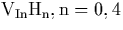 are shown in Table 4.4. The results show that as the number of H atoms in the vacancy increases, the P-H bonds are shorten and the vibrational modes increase. This is due to the compressive effect of the other hydrogen atoms on each P-H group, coupled with the removal of dangling bonds from `unsaturated' P atoms which would have acted to attract the hydrogen away from its phosphorus neighbour. This is consistent with previous results obtained for Si [60,69].
| Defect | 5cLocal Vibrational Modes | Symmetry | Bond | ||||
| Exp [61] | [59] ([70]) | 3cCalculation | Length | ||||
| 2315.2 | 2315.6 | 2387.8* | 2356.4T | 618.6D | Td | 1.419 | |
| 1683.4 | 1713.0* | 1690.8T | 445.3D | ||||
| 2324.1 | 2286.3D | 695.3D | C3v | 1.429 | |||
| 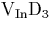 | 1667.6 | 1640.8D | 498.2D | ||||
| 2256.2 | 2216.8 | 730.0 | C2v | 1.439 | |||
| 617.7 | 611.8 | 602.0 | |||||
| 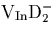 | 1619.4 | 1591.6 | 523.0 | ||||
| 446.4 | 444.4 | 438.8 | |||||
| 2201.7 | (2202.4) | 2150.7 | 644.9 | 644.7 | C3v | 1.450 | |
| 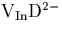 | 1603.8 | 1544.7 | 467.5 | 467.4 |
The shift in P-H length from to is only 2.1% (from 1.419 Å to 1.450 Å), but it leads to a 9.9% shift in vibrational mode (2387.8 cm-1 to 2150.7 cm-1). The calculated H- stretch modes of the partially hydrogenated vacancies could account for a group of experimentally observed vibrational modes lying between 2200 and 2290 cm-1 [59,70].
High temperature annealing of InP:Fe reduces the concentration of . This is due to the partial dissociation of this centre and, up until now, only has been identified with certainty. It is shown here that and are acceptors. In annealed high-resistivity material they should cause a drop in the 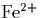 concentration. This will be in addition to the decrease in concentration of due to loss of the donor.
In contrast, Bardeleben et al [71] found that
thermal annealing of Fe doped InP in the range 660-820  C led
to an increase in concentration. They suggested this was
due to the formation of some unidentified deep thermal donors. This
could be associated with other hydrogen complexes. However, from this
work it seems unlikely that hydrogenated vacancies are responsible.
C led
to an increase in concentration. They suggested this was
due to the formation of some unidentified deep thermal donors. This
could be associated with other hydrogen complexes. However, from this
work it seems unlikely that hydrogenated vacancies are responsible.
In summary, the fully hydrogenated vacancy, , acts as a single donor due to a partially filled singlet near the top of the gap; thus will compensate 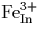 in InP. Removal of hydrogen atoms from the vacancy leads to increased acceptor character as the triplet state starts to empty.